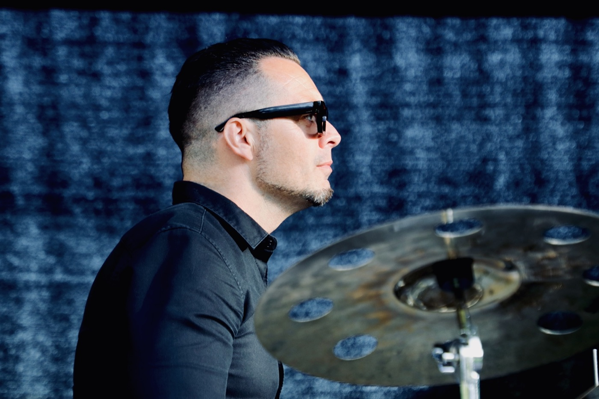

Chefredaktion
Journalistisk chefredaktør med ansvar for publicistisk retning, digital udvikling, organisatorisk forandring og ledelse af ca. 150 medarbejdere.
Nyhedshund · chefredaktør · digital forandringskraft
Jeg er rundet af nyhedsarbejdet: tempoet, tvivlen, prioriteringerne og fornemmelsen for, hvornår noget betyder noget. I dag bruger jeg den dømmekraft til at udvikle redaktionelle strategier, organisationer og digitale systemer, der virker i hverdagen.
Dokumenteret gennem chefredaktion og ledelse af ca. 150 medarbejdere — ført ud i digital indholdsstrategi, organisationsudvikling, AI-implementering, platformudvikling og medieledelse.
 Carsten Lysdal · 2026
Carsten Lysdal · 2026
Min erfaring spænder fra klassisk nyhedsarbejde og redaktionel ledelse til digital transformation, AI i drift, platformudvikling og offentlig formidling.
Journalistisk chefredaktør med ansvar for publicistisk retning, digital udvikling, organisatorisk forandring og ledelse af ca. 150 medarbejdere.
Erfaring som journalist, lokalredaktør og nyhedsredaktør med timing, kildekritik, prioritering og samfundsblik som fagligt fundament.
Arbejdet med brugerbehov, relevanskriterier, formatvalg, distribution, SEO og performance som fælles grundlag for bedre redaktionelle beslutninger.
OKR/KPI, mellemlederudvikling, workshops, feedbackkultur, adfærdsdesign og nye arbejdsmønstre i redaktionelle organisationer.
Erfaring med AI fra eksperiment til drift og udvikling af redaktionelle systemer, workflows og platforme, herunder egen produktudvikling og prototyping.
Oplæg om AI og journalistik og moderation af konferencer, events og vælgermøder i krydsfeltet mellem medier, digital udvikling og samfund.
Data er først interessant, når den ændrer en beslutning.
Fem kapabiliteter, der tilsammen forbinder journalistisk dømmekraft, organisation, data, teknologi og mennesker. Klik en kompetence for at se, hvad den betyder, og hvad den er bevist gennem.
Jeg ved, hvordan nyheder opstår, prioriteres, vinkles og publiceres under pres — og hvordan journalistisk kvalitet bevares, når organisationen forandrer sig.
Jeg omsætter brugerbehov, relevanskriterier, data, formater, SEO og performance til redaktionelle beslutninger, der kan forstås og bruges i hverdagen.
Tydelig retning, ledelse af ledere, faglig autonomi, psykologisk tryghed og evnen til at gennemføre forandring, mens driften kører. Strategi omsættes til ansvar, beslutninger og arbejdsgange — og forankres, så organisationen bærer det selv.
Jeg kan gå fra behov og use case til prototype, workflow, implementering og drift — med blik for både bruger, redaktion, teknologi og forretning.
Jeg gør komplekse emner konkrete — som oplægsholder, workshopfacilitator, moderator og talsperson.
AI er først relevant, når den gør mennesker bedre.
Seks nedslag i arbejdet, navngivet efter den kapabilitet de beviser — ikke det værktøj, der blev brugt. Klik et kort for at se problem, greb, resultat og hvad det siger om mig.
Brugerdata eksisterede, men blev ikke brugt operationelt. Redaktionelle beslutninger baseret på tradition og mavefornemmelse frem for brugerbehov og dokumenteret performance.
Frameworks for relevanskriterier, prioritering og content performance. Systematisk brug af brugeradfærdsdata i redaktionelle møder. Kobling af kvantitative data med kvalitative brugerindsigter og journalistisk dømmekraft.
Trafikken blev fordoblet, og indholdet ramte brugernes behov langt bedre end før. Data gik fra sidedokument til redaktionelt arbejdsredskab, folk faktisk brugte.
Jeg oversætter data til noget en redaktion rent faktisk kan handle på i hverdagen.
En stor redaktionel organisation arbejdede under højt driftspres med manuelle processer, siloer, uklart ejerskab og varierende brug af data og teknologi.
En fælles ledelsesramme med OKR/KPI, tydeligere beslutningsrum og nye prioriteringsmodeller. Mellemledere og faglige nøglepersoner blev gjort til medskabere af løsningerne — med plads til faglig uenighed og løbende justering, men ikke til uklarhed om retning eller ansvar.
Større fælles retning, stærkere lokalt ejerskab og bedre sammenhæng mellem strategi og daglige beslutninger. Output og ressourceudnyttelse blev løftet, mens nye arbejdsformer blev forankret.
Jeg leder ledere, ikke kun opgaver. Strategi virker først, når den kan mærkes i hverdagen — som placeret ansvar og beslutninger, der hænger sammen på tværs.
Redaktionen eksperimenterede med AI, men uden systematisk praksis. Individuel, ustruktureret brug gav inkonsistent kvalitet og manglende skalerbarhed.
Undfangede og udviklede Chatty, den bærende AI-infrastruktur for redaktionelle arbejdsgange, fra idé til driftsat system. Systematisk onboarding, målrettet træning, fælles standarder og feedback loops fulgte med, ligesom integration i CMS og mailflows.
Tiden fra input til udkast faldt til få minutter, og arbejdsmønstrene ændrede sig varigt. Det frigjorde ressourcer til den journalistik, der skulle prioriteres.
Jeg implementerer teknologi som organisatorisk forandring, ikke som værktøjsadgang. Og bygger selv den infrastruktur, det kræver.
Redaktionel sortering af indhold skete på tradition og mavefornemmelse, ikke på et struktureret grundlag. Samtidig krævede et nyt AI-drevet medieprodukt en fuld oversættelse af redaktionelt koncept til teknisk og kommerciel arkitektur, fra bunden.
Byggede selv et rating- og anbefalingssystem, der læser og scorer journalistisk indhold ved at kombinere indholdsanalyse, åbne kilder og bruger- og performancedata. Sideløbende ledet den redaktionelle, produktmæssige og kommercielle discovery-proces for et AI-drevet erhvervsmedieprodukt, med tæt stakeholder-alignment med CEO, Tech Lead og Commercial Lead.
Systemet kører i drift og prioriterer indhold redaktionelt. Produktspecifikation, positionering og roadmap ligger klar til implementering.
Jeg tænker platform og produkt som en forlængelse af redaktionel logik. Og bygger selv, når det er den hurtigste vej til at bevise en idé.
Journalistisk research og formidling sker i stigende grad i komplekse digitale rum, hvor klassisk kildekritik skal kombineres med nye kildelandskaber. Samtidig dækker konkurrerende medier ofte det samme, uden at nogen systematisk opdager, hvad der bliver usynligt.
Metodisk tilgang til digital og klassisk research, herunder medvirken til at designe en AI-drevet signalmotor, der kombinerer OSINT-lignende kildeovervågning med analyse af dækningsgab og skæv framing. Systemet leverer beslutningsstøtte til journalisten, ikke en automatisk konklusion. Suppleret af oplæg, workshops og moderation af konferencer, events og vælgermøder.
Research-kapaciteten er styrket, og den undersøgende journalistik er blevet skarpere. Redskabet afdækker systematisk blinde vinkler i både egen og konkurrenters dækning.
Jeg mister ikke journalistikken af syne, uanset hvor teknisk arbejdet bliver. Journalisten træffer beslutningen; systemet leverer grundlaget.
Indhold strømmer ind fra nyhedsmedier, pressemeddelelser, rapporter og myndigheder. Uden et systematisk prioriteringsprincip sorterer redaktøren efter kronologi eller mavefornemmelse. Begge dele skalerer dårligt og er blinde for mediets redaktionelle særkende.
En LLM-drevet intelligensplatform med tre lag: emneklassifikation på 25 topics, scoring på 11 journalistiske funktioner (Challenge, Blind Spot, Mythbuster, Signal, Threat, Opportunity, Inspiration, Guide, Solution m.fl.) og en samlet score på tværs af syv vægtede dimensioner. Tre centrale redaktionelle beslutninger om vægtning, funktionsstruktur og output specificeret og valideret med chefredaktøren. MVP bygget som fuld React/TypeScript-applikation på Cloud Run med Firebase Hosting og Gemini som primær LLM — med 25 live RSS-feeds, inline kildesøgning, bulk-analyse, manuel score-override, runtime prompt-editor og source intelligence.
Test-MVP i aktiv drift. Systemet fungerer som prioriteringsmotor, anbefalingssystem, trigger-platform og kildeintelligens i ét. Redaktøren ser score, journalistisk funktion, redaktionel pille, mulige vinkler, konkret løftningsråd og kildekritisk advarsel pr. input. Intet kasseres automatisk — lav score vises nedtonet.
Jeg oversætter redaktionel logik til systemdesign og driver produktudvikling fra første idé til kørende MVP — i tæt samarbejde med chefredaktør og tech lead. Og jeg bygger selv, når det er den hurtigste vej til at bevise noget.
Otte lag, fra journalistuddannelse til produktudvikling — hvert lag bygger videre på det forrige.
Product manager og journalistisk udvikler på et projekt om AI-infrastruktur og et digitalt erhvervsmedieprodukt. Ejer positionering, discovery, redaktionelt koncept og roadmap, i tæt samarbejde med CEO, Tech Lead og Commercial Lead. Bygger derudover selv med AI-understøttet prototyping.
Overordnet journalistisk og organisatorisk ledelse af en organisation på ca. 150 medarbejdere. Sat retning for digital udvikling, AI-implementering og datadrevet prioritering — og omsat strategi til ansvar, beslutninger, arbejdsgange og varig praksis.
Daglig redaktionel prioritering, timing, kvalitet og performance på tværs af platforme — med data som grundlag for bedre produktion.
Ledelsesansvar for redaktion, drift, journalistisk performance og relationer til myndigheder, aktører og lokalsamfund.
Grundlaget: lokal journalistik, kildearbejde, produktion, vinkling og forståelse for, hvad der betyder noget for brugerne.
Undervisning sideløbende med journalistikken — formidling, tålmodighed og evnen til at få andre til at præstere, øvet på tværs af to årtier.
Musikalsk præcision, ansvar, disciplin og ensembleforståelse i en organisation med stærke traditioner og høje krav.
Kildekritik, vinkling, research, samfundsforståelse og journalistisk ansvar som fagligt fundament.
Ledelse er rytme: retning, timing og samspil.

Min opgave som leder er ikke at være den dygtigste i alle rum, men at få fagligheden i rummet til at arbejde i samme retning.
Mere end to årtier med musik har formet min måde at lede på. Et stærkt ensemble kræver retning, timing, disciplin og lydhørhed — og plads til, at den enkelte kan sit fag bedre end dirigenten.
Ledelse handler også om hvornår: hvornår tempoet skal op, hvornår der skal skabes ro, og hvornår en beslutning ikke kan vente.
Dygtige mennesker behøver ikke detailstyring. De behøver en fælles retning, tydelige rammer og blik for, hvordan forskellige fagligheder gør hinanden bedre.
Høje standarder kræver gentagelse, ærlig feedback og plads til at lære. Psykologisk tryghed er ikke fravær af krav, men muligheden for at sige tvivlen højt, før den bliver til en fejl.
Retning er mere end en plan. Den skal kunne ses i prioriteringerne og mærkes i hverdagen. En forandring er først lykkedes, når nye beslutninger og arbejdsgange fungerer uden konstant ledelsesmæssigt pres.
Jeg er 39 år, gift, far til tre og bosat på Sjælland. Jeg motiveres af at skabe resultater gennem andre — og af at udvikle organisationer, hvor ambition, faglighed og menneskelig tillid kan eksistere samtidig.
Jeg er relevant i samtaler om redaktionel ledelse, digital indholdsstrategi, AI i drift, organisationsudvikling, platforme, oplæg og moderation.
carstenlysdal@gmail.com